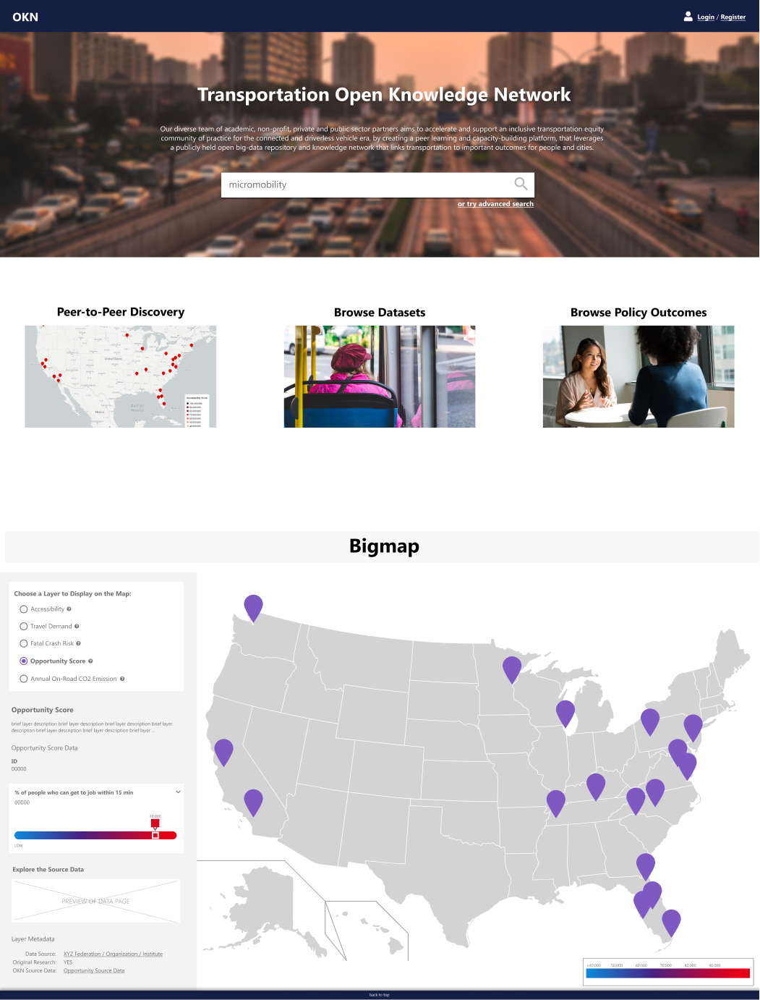
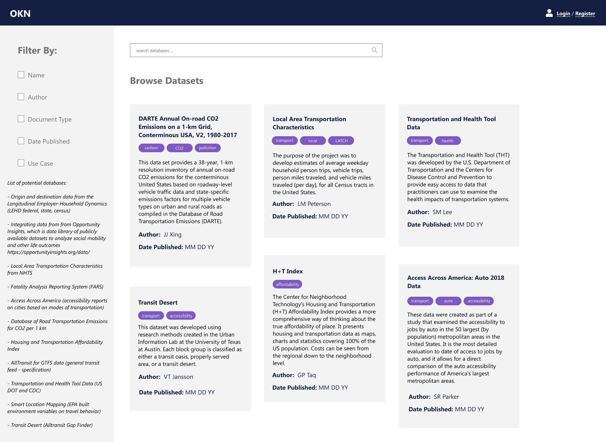
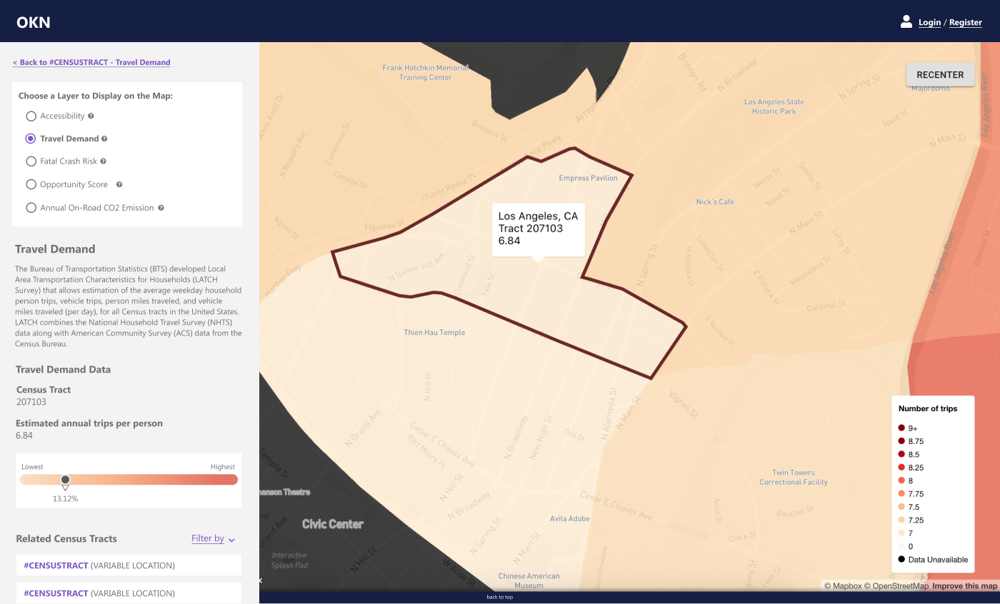
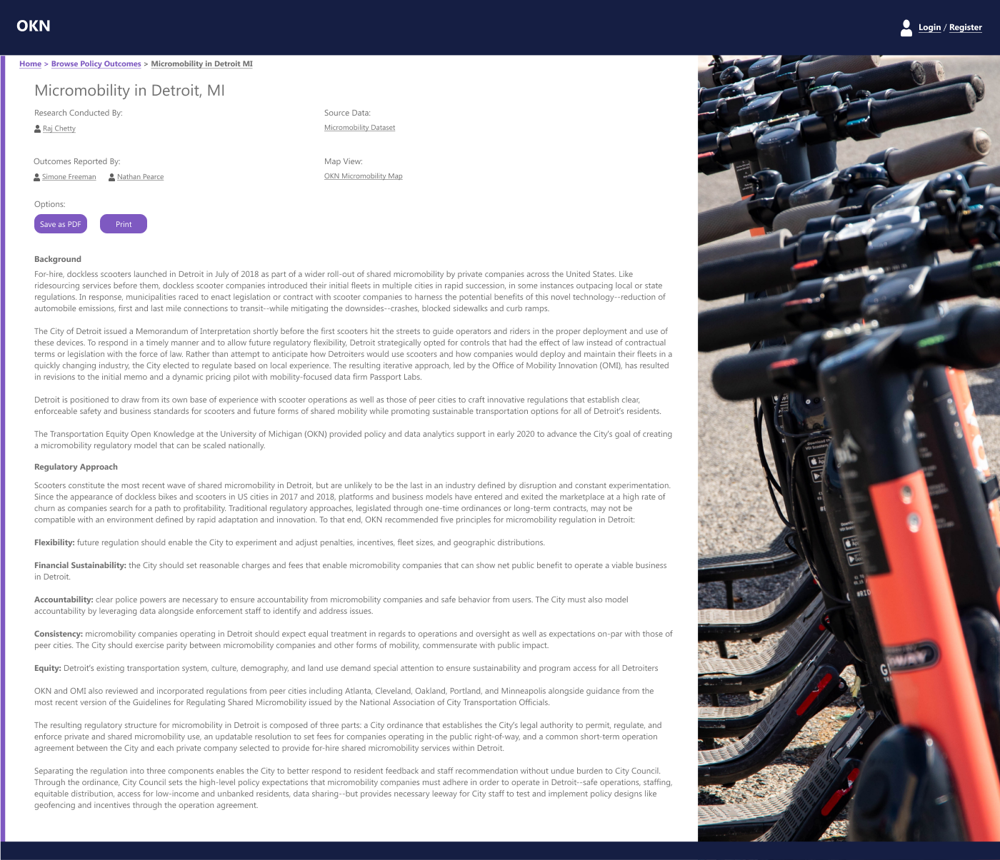
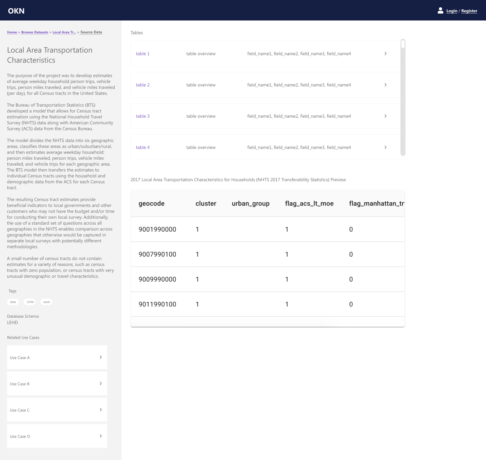
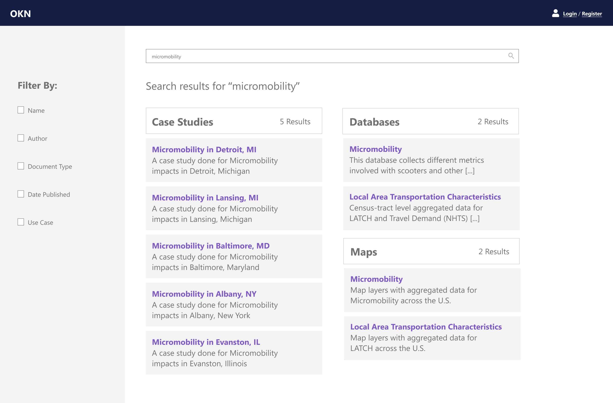

Transportation Equity Open Knowledge Network
Role: UI/UX Designer, User Researcher

I created wireflows and interactive website mockups for the Transportation Open Knowledge Network (TEOKN).
Currently, I am working with a small team of developers to align the public-facing site with our prototypes.
I also assisted with user interviews to gain an understanding of our audience needs, then evaluated and incorporated their feedback.







This project is sponsored by the National Science Foundation and is a partnership between the Gerald R. Ford School of Public Policy and the University of Michigan Transporation Research Institute.